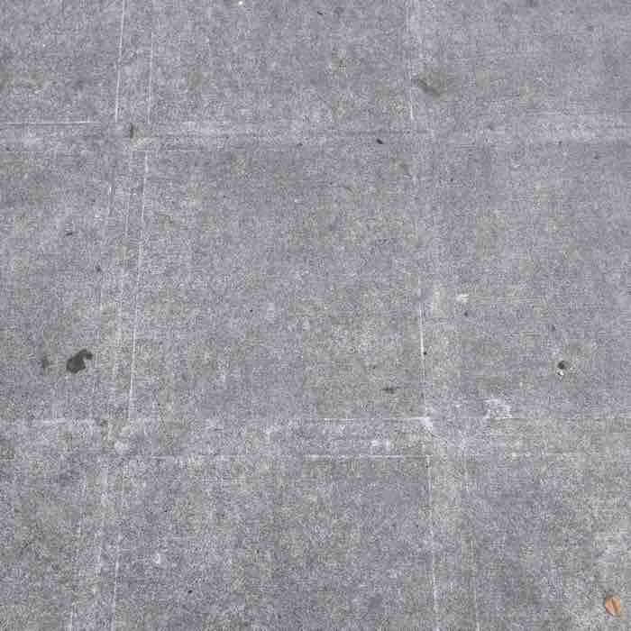
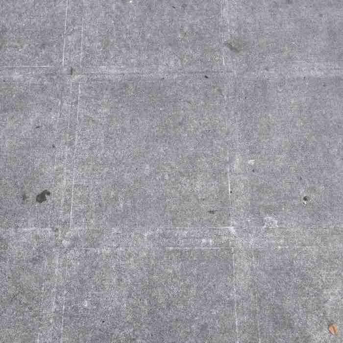

Along with the Bootstrap 3 style grid features, ryukyu.css has a native grid system.

Along with the Bootstrap 3 style grid features, ryukyu.css has a native grid system.

This page is three columns on computer screens but on smaller screens the columns stack on each other.
Each of the three columns with images have the class .rc-m-4 and they are contained in a class .r_container.